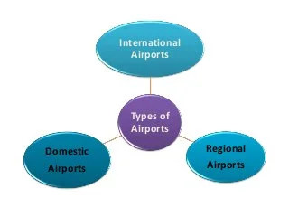

پروژه تجزیه و تحلیل سیستم ها
ارائه دهندگان
فاطمه حسن زاده
متین سلیمانی
محمد حسین خلیلی
© این مقاله دارای حق کپی رایت می باشد
فرودگاه
فرودگاه چیست؟
فرودگاه محلی برای نشستن و برخاستن هواپیماست. از این رو باید واجد
امکاناتی باشد که هم مسافران، هم خدمه پروازی و هم خود هواپیماها به آن
نیاز دارند. این امکانات عبارتند از: باند فرود _ برج مراقبت پرواز
(taxiway)ترنینال یا پایانه _ تاکسی وی
باند فرود
یک محل قابل دسترسی هوایی با آسمان باز است که برای فرود آمدن و یا برخاستن
هواپیما تعبیه شده است. باند فرود می تواند از بتن، آسفالت یا سیمان تهیه
شده باشد و یا حتی سطحی طبیعی مثل چمن باشد.

:برج مراقبت پرواز
برج مراقبت پرواز مشابه فانوس دریایی است که وظیفه اش جلوگیری از برخورد
هواپیماها به یکدیگر و یا به موانع است. علاوه بر این برج مراقبت مسئولیت
بسترسازی مناسب برای روان کردن ترافیک هوایی، ارائه اطلاعات ضروری برای حفظ
ایمنی پروازها و کمک های لازم در هنگام بروز بحران را بر عهده دارد.
:ترمینال یا پایانه
بخشی که مسافران در آن به خرید بلیت، انتقال بار و چمدان های همراه خود و
عبور از گیت های امنیتی می پردازند. همچنین سالن انتظار نیز بخشی از
ترمینال محسوب می شود که مسافران برای سوار شدن به هواپیما در آن تجمع می
کنند

: تاکسی وی
به مسیرهای فرعی باند که به منظور تردد هواپیما و حرکت از رمپ به باند یا
از باند به رمپ قرار داده شده تاکسیوی گویند که با خطوط زرد رنگ و با دو
عدد و حرف نامگذاری می شود. علاوه بر بخش های اصلی که در بالا به آنها
اشاره شد، فرودگاه ها امکانات مسافرتی نیز برای مسافران در نظر گرفته اند
که از جمله آنها می توان به هتل، رستوران، کلینیک، داروخانه، بانک و اداره
پست اشاره کرد.

: انواع فرودگاه ها
بر اساس نوع و مسیر پرواز هواپیماها می توان فرودگاه ها را به فرودگاه های
داخلی، بین المللی و مرز هوایی تقسیم کرد.
فرودگاه داخلی :
فرودگاه های داخلی آنهایی هستند که تنها پذیرای هواپیماهایی هستند که در
داخل محدوده کشور پرواز می کنند، مانند فرودگاه کاشان، بابلسر، رفسنجان و
...
: فرودگاه بین المللی
فرودگاه های بین المللی همانطور که از نام آنها برمی آید، هم پروازهای
داخلی و هم خارجی را میزبانی می کنند. مانند : فرودگاه بین المللی مهرآباد،
امام خمینی و شهید هاشمی نژاد
: فرودگاه مرز هوایی
مرز میان فرودگاه های مرز هوایی و فرودگاه های بین المللی در خدماتی است که
در این دو نوع فرودگاه ارائه می شود. فرودگاه های بین المللی باید از
امکاناتی مثل امور گذرنامه، گمرک، مهاجرت، قرنطینه برخوردار باشد. در حالی
که در فرودگاه های مرز هوایی برای جلوگیری از هزینه های بیشتر به فرودگاه،
این خدمات تنها به صورت موردی و آن هم در زمان انجام پرواز ارائه می شود.
اما نقطه مشترک این فرودگاه ها با فرودگاه های بین المللی پذیرش پروازهای
خارجی است. فرودگاه بین المللی اهواز، اراک و اردبیل از این دسته هستند.

کد فرودگاهی چیست؟
کد فرودگاهی در اصل کدی سه یا چهار حرفی است که از آن برای شناسایی فرودگاه
های جهان استفاده می شود. این کد از سوی دو سازمان بین المللی به فرودگاه
های کشورها اعطا می شود.
: ایکائو
سازمان بین المللی هوانوردی غیرنظامی است که به ارائه کدی چهار حرفی برای
برنامه ریزی پرواز و کنترل ترافیک هوایی، شناسایی ایستگاه های هواشناسی،
ایستگاه سرویس پروازهای بین المللی یا مراکز کنترل محیطی می پردازد. بر این
اساس، ایکائو، جهان را به چند منطقه تقسیم کرده و این کدها را نیز بر همین
اساس به فرودگاه ها می دهد. حرف اول به قاره، حرف دوم به کشور و حرف های
سوم و چهارم به فرودگاه مرتبط هستند.
یاتا
انجمن بین المللی حمل و نقل هوایی و متشکل از 260 شرکت هوایی است. این
سازمان برای فرودگاه های جهان کدی سه حرفی را تعریف می کند.

: پر رفت و آمدترین فرودگاه های ایران
نزدیک به صد فرودگاه در سراسر ایران وجود دارد که میزبان پروازهای داخلی و
بین المللی هستند. از این میان باند فرود برخی فرودگاه ها از بقیه پر رفت و
آمدتر است. در اینجا با شش فرودگاه پرتردد ایران از حیث تعداد پروازها،
تعداد مسافرین و نیز میزان بار جابجا شده آشنا می شویم

فرودگاه بین المللی امام خمینی:
فرودگاه امام خمینی با 14 هزار هکتار وسعت در 30 کیلومتری تهران، در
شهرستان ری قرار گرفته است. این فرودگاه که به طور رسمی پروازهای داخلی و
خارجی خود را در سال 1381 آغاز کرد، شامل هتل، سالن های استراحت اختصاصی،
فروشگاه، رستوران و کافی شاپ نیز می باشد. گفتنی است که فرودگاه امام خمینی
مرکز فعالیت شرکت های هوایی ایران ایر، ماهان، آسمان، قشم، کاسپین، تابان و
زاگرس می باشد. همچنین هواپیماهای بیش از 30 شرکت خارجی نیز به این فرودگاه
رفت وآمد می کنند. مطابق آمارها در سال 2016، 53 هزار نشست و برخاست در این
فرودگاه انجام شده، بیش از 7 میلیون مسافر جابجا شده و بیش از 148 میلیون
کیلوگرم بار حمل شده است.

فرودگاه بین المللی شهید دستغیب شیراز
فرودگاه شهید دستغیب که در شهر شیراز واقع شده، مجهزترین فرودگاه ایران از
لحاظ تجهیزات ناوبری و الکترونیک بعد از فرودگاه امام خمینی است. فرودگاه
شیراز دارای پارکینگ خودرو، رزرواسیون هتل، کیوسک اطلاع رسانی، انواع غرفه
ها، مسجد، اطلاعات پرواز، باجه ارزی، خودپرداز و تسهیلات برای معلولین است.
هواپیماهای شرکت های هوایی ایرعربیا، آرمنیا، آسترین ایرلاینز، بوراجت،
کرندون ایرلاینز، فلای دبی، جورجین ایرویز، پگاسوس ایرلاینز، قطر و ترکیش
ایرلاینز به این فرودگاه در رفت و آمد هستند. ضمن اینکه شرکت های داخلی
آتا، اترک، کاسپین، ایران ایر، ایران ایرتور، ماهان، کیش ایر، نفت، آسمان،
معراج، قشم، تابان و زاگرس نیز پروازهایی به این فرودگاه دارند. آمارها
نشان می دهد که در سال 2016، 31 هزار پرواز به این فرودگاه انجام شده، و
نزدیک به 3 میلیون مسافر و 31 میلیون کیلوگرم بار جابجا شده است.

فرودگاه بین المللی کیش
فرودگاه کیش در جزیره کیش در استان هرمزگان واقع شده است. این فرودگاه در
سال 1356 به طور رسمی و با پرواز اولین هواپیمای مسافری کنکورد، کار خود را
آغاز کرد. فرودگاه کیش با 9 میلیون متر مربع مساحت، دارای چهار ترمینال
داخلی و خارجی بوده و به 20 مقصد داخلی و دو مقصد خارجی(دبی و مسقط) خدمات
ارائه می کند. هواپیماهای شرکت های آتا، اترک، کاسپین، ایران ایر، ایران
ایرتور، آسمان، کارون، کیش ایر، ماهان، معراج، قشم، سپهران، تابان و زاگرس
در باند فرود این فرودگاه نشست و برخاست می کنند. فرودگاه بین المللی کیش
با بیش از 23 هزار پرواز، جابجایی 2 میلیون مسافر و 30 میلیون کیلوگرم بار
در سال 2016 پنجمین فرودگاه پرتردد کشور شناخته شد.

فرودگاه بین المللی شهید بهشتی اصفهان
فرودگاه شهید بهشتی که در سال 1361 تأسیس شد، به خاطر دور بودن از اراضی
شهری دارای مزیت نسبت به سایر فرودگاه های کشور است. از جمله این مزیت ها
می توان به عدم ایجاد آلودگی صوتی برای ساکنان شهر اشاره کرد. شرکت های
هوایی که هواپیماهای خود را در این فرودگاه فرود می آورد عبارتند از: ایران
ایر، آسمان، ایران ایرتور، تابان، ماهان، نفت، زاگرس، کیش ایر، قشم ایر،
خدمات هوایی سامان، خدمات هوایی همراه کوشا کیش و نیز شرکت های خارجی اتریش
ایر، العراقیه و ترکیش ایر. 23 هزار و 731 پرواز و نیز 2 میلیون و 671
مسافر این فرودگاه را به ششمین فرودگاه پر رفت و آمد کشور بدل کرده اند.
ضمن اینکه در سال 2016، بیش از 20 میلیون کیلوگرم بار نیز از طریق این
فرودگاه جابجا شده است.
RST
فرودگاهی چیست و چه وظایفی دارد
RST( Runway Safety Team)
یا همان ايمني باند يك چالش جدي و يك اولويت اساسي براي تمامی فرودگاهها و
شركتهاي هواپيمايي در جهان و همچنین ایران است. بررسی آمارها نشان ميدهد
كه سوانح مربوط به باند پروازي دومين عامل سوانح هوايي در جهان ميباشد.
Runway Incursion/Excursion
يكي از مهمترين رويدادهايي هستند كه ايمني باند را به مخاطره مياندازند.
اگرچه تعداد كل Runway incursions ها ممكن است كم باشد، ولي ميتواند يك
خطر بالقوه براي سوانح جدي و مرگبار در فرودگاه ها باشند. به منظور تأمين
ايمني باندهای پروازي و شناسايـــي و كاهش ريسك مخاطــرات پروازي، سازمان
بين المللي هواپيمايي كشــوري (ايكائو) تشكيل تيمهاي ايمني در فرودگاهها
تحت عنوان " تيم ايمني باند فرودگاه " را به تمامی فرودگاه ها پيشنهاد
نموده است تا تهديدهای ايمني تحت كنترل قرار گیرند. به همین منظور ایکائو
تقویت تیمهای تخصصی ایمنی باند در فرودگاه را به عنوان وسیلهای موثر در
کاهش حوادث و رویدادهای مربوط به باند، ترویج و پشتیبانی میکند و از کلیه
کشورها خواسته تا با تشکیل این تیمها، ایمنی باند را ارتقاء بدهند.
سازمان هواپيمايي ایران نیز در راستاي انجام وظایف خود در خصوص تنظيم
مقررات صنعت هوانوردي کشور به منظور ارتقاء ايمني، نسبت به تدوين الزامات و
مقررات تيم ايمني باند فرودگاه اقدام نموده و کلیه فرودگاههای کشور را
مطابق با سند 2019 و Part ADR ملزم به ایجاد تیم ایمنی باند (RST) نموده
است
در همین راستا فرودگاه بینالمللی امام خمینی(ره) برای اجرای قوانین و
مقررات سازمان هواپیمایی کشوری، اقدام به ایجاد و ( RST) نموده است با این
تفاوت که به دلیل شرایط ویژه فرودگاه بینالمللی امام خمینی(ره)، ( RST)
علاوه بر ایمنی باند، ایمنی منطقه پروازی و هر موضوعی که عملیات پروازی
فرودگاه را تحت تاثیر قرار بدهد را در بر میگیرد.
راهنمای مدیریت ایمنی (SMM) :
براساس اصول فرآیند شناسایی خطر و مدیریت ریسک (HIRM) مطابق با 19 Annex و
Doc 9859 ایکائو و راهنمای مدیریت ایمنی (SMM) تشکیل شده و در واقع هدف
اصلی آن ارتقاء و پشتیبانی از ایمنی باند فرودگاه بینالمللی امام
خمینی(ره) با تلفیق سیستمهای ایمنی ارگانها، شرکتها و ادارات فعال در
فرودگاه است.
علاوه بر این، فرایند سیستمهای مدیریت ایمنی ارگانها، شرکتها و ادارات
مرتبط با ایرساید نیز باید برای شناسایی و ارزیابی خطرات احتمالی باند در
هماهنگی کامل با ( RST) باشند.
علاوه بر این، فرایند سیستمهای مدیریت ایمنی ارگانها، شرکتها و ادارات
مرتبط با ایرساید نیز باید برای شناسایی و ارزیابی خطرات احتمالی باند در
هماهنگی کامل با ( RST) باشند.
- ورود غيرمجاز به باند(Runway Incursion)
- خروج (انحراف) از باند(Runway Excursion)
- فرود غيرعادي(Abnormal RWY contact)
- برخورد حیات وحش با هواپيما
- تهديدات هندلينگ زميني
- برخورد با موانع
- هرگونه تهديد در ايمني فعاليت فرودگاه
حوزه مسئولیت و کاربرد
با توجه به ویژگیهای خاص فرودگاه بینالمللی امام خمینی(ره) و فعالیتهای
مداوم طرحهای توسعه فرودگاه و عملیات پروازی جاری،RST تیمی متشکل از افراد
متخصص در زمینه کلیه خطرات و فعالیتهای مرتبط با ایمنی در محدوده منطقه
مانور پروازی می باشد.
فعالیتهای این تیم، به ایمنی بخشهای منطقه مانور و کلیه فعالیتهای داخل
و خارج از ایرساید که بر عملیات پروازی فرودگاه تاثیرگذار است مربوط میشود.
نقش اصلی RST، ارائه مشاوره به مدیریت فرودگاه و بخشهای عملیاتی در مورد
خطرات شناسایی شده و سایر موارد خطرساز و نگرانکننده و تدوین الزامات و
راهحلهای کاهش دهنده برای ریسکهای شناسایی شده میباشد.
این تیم نقش قانونگذاری و اجرایی ندارد و نه تنها جایگزین هیچ یک از اجزاء
سیستم مدیریت ایمنی (SMS) نیست، بلکه در هماهنگی و ارتباط مستقیم با سیستم
مدیریت ایمنی قرار داشته و بخشی از آن به شمار میرود.
به نوعی دیگر میشود گفت مسئولیت اصلی ( RST) این است که برنامهای عملیاتی
و قابل اجرا برای ایمنی باند تدوین نموده، مخاطرات احتمالی را هشدار داده و
استراتژیهایی را برای حذف و کاهش خطرات توصیه کند